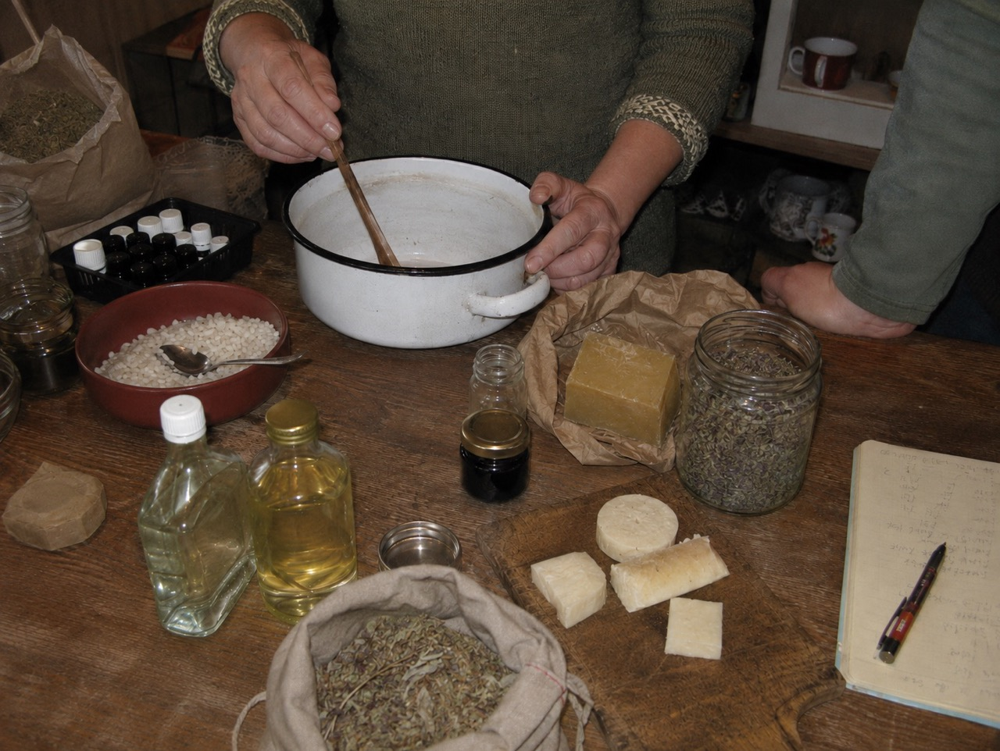
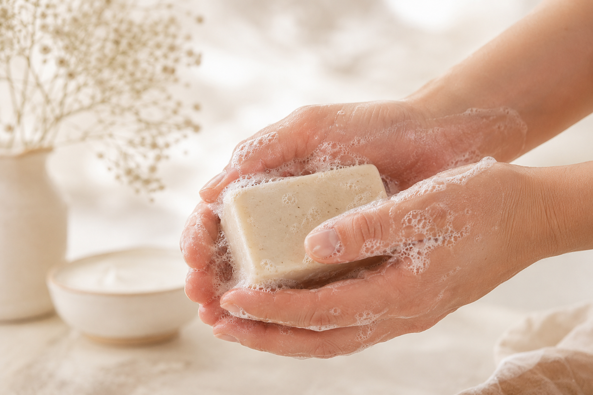
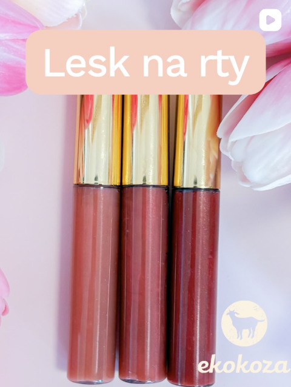

Spolupracujeme
Rodinná mýdlárna, kde se poctivá ruční práce potkává s vůní přírody, jemnou péčí a radostí z každého originálního kousku.
Ještě před pár lety byla výroba mýdel pro Miroslavu Priščákovou nenápadným koníčkem a první mýdla vznikala hlavně jako dárky pro rodinu a přátele. Nadšené reakce ale ukázaly, že voňavá tvorba má větší potenciál. Z domácí výroby postupně vyrostla oblíbená česká značka a malá rodinná mýdlárna, která si získala místo mezi lidmi, kteří mají rádi přírodní kosmetiku, poctivé suroviny a výrobky s příběhem.

Poctivá dílna s rodinnou energií
ručně vyráběná mýdla, kosmetika, tuhé šampony a vonné doplňky
V jejich dílně vzniká
V malé dílně vznikají s péčí jemná přírodní mýdla pro každodenní použití i výrazné designové kousky, které se hodí jako originální dárek. Nechybí květinové motivy, levandulová mýdla, sladší varianty s medem nebo ovocnými tóny ani další voňavá přírodní kosmetika – tuhé šampony, šumivky do vany a vonné vosky.

Příběh
Příběh Mirčiných mýdel se začal psát v roce 2013. Zakladatelka Mirka tehdy vyráběla první mýdla jen pro radost. O dva roky později se rozhodla opustit stálé zaměstnání a naplno se ponořit do světa vůní, olejů a kreativní tvorby. Sama říká, že jí mýdla změnila život a přinesla svobodu, klid, nové přátele i nový spokojený směr.
Z koníčku se tak stala malá rodinná mýdlárna. V roce 2017 se zapojil i manžel, který pomáhá hlavně s prodejem, a postupně se přidala celá rodina napříč generacemi. Maminka se podílí na výrobě mýdlových ozdob, tatínek vymýšlí technologické vychytávky, které šetří práci, a dcera Jana pomáhá s fotografiemi a webem.

Řemeslo
Základem každého výrobku je poctivá ruční práce. Mýdla vznikají v malých šaržích, díky čemuž má dílna prostor hlídat kvalitu, pracovat s detailem a zároveň si uchovat kreativitu. Používají se především rostlinné oleje, jako je olivový, kokosový a ricinový, doplněné o přírodní másla a další šetrné ingredience.
Spolupráce s Ekokozou
Mirčina mýdla si dodavatele vybírají s velkou pečlivostí. „Nejdelší spolupráci máme s firmou Ekokoza, která nabízí široký sortiment a nadstandardní zákaznický servis,“ říkají. Váží si širokého sortimentu, dobrého výběru surovin i vstřícného zákaznického servisu. Společný je jim také důraz na původ surovin, udržitelnost, ruční práci a výrobky, které nevznikají anonymně ve velkém, ale poctivě a s péčí.
Region a lidé
Kvalitu a lokální původ potvrzuje ocenění Regionální produkt Jizerské hory. Mirčina mýdla tak nejsou jen kosmetika, ale připomínka toho, že i v uspěchané době má smysl zpomalit, vrátit se k přírodě a dát přednost věcem, které vznikají s péčí a radostí. Pořídit si je můžete online i osobně na trzích, kde je možné poznat značku zblízka a přivonět k novinkám.
Proč to sedí k Ekokoze
Mirčina mýdla ukazují, jak může z kvalitních surovin a poctivého přístupu vzniknout radostná, osobní a krásně použitelná péče. Přesně takové projekty máme rádi: tvoří lokálně, dávají smysl řemeslu a dokazují, že i malé výrobky mohou mít velký příběh.
Na co se těšit
„Mirčina mýdla jsou malý luxus pro každý den: chvíle pro sebe, která voní po bylinkách, květinách a poctivé práci.“
Mirčina mýdla × Ekokoza
Za Mirčinými mýdly stojí lidé, kteří do své práce dávají kus sebe. Právě proto jejich výrobky nepůsobí jako anonymní kosmetika z velkovýroby, ale jako osobní pozvání ke zpomalení, péči o pokožku a radosti z přírodních vůní. Prohlédněte si jejich tvorbu, inspirujte se a dopřejte si poctivý voňavý rituál.